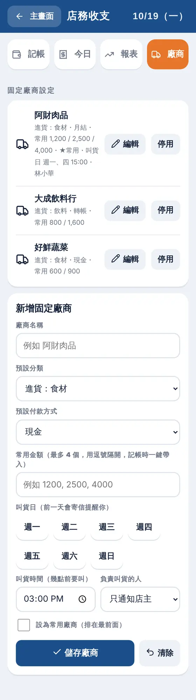
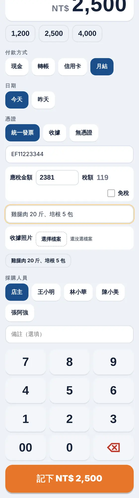
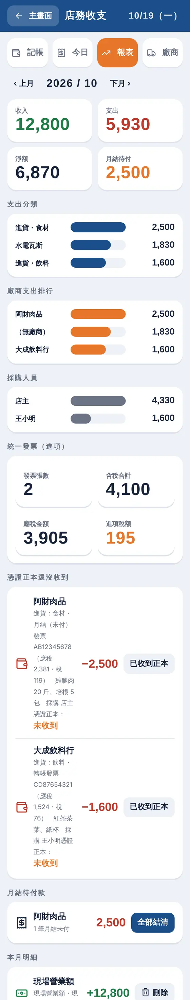
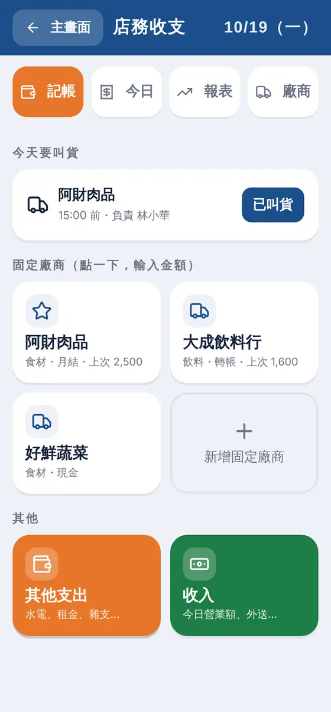

3.1
設定固定廠商
常叫貨的廠商先設好，之後記帳只要點一下。
- 主畫面「財務」→「店務收支」→「廠商」分頁（店主才有）。
- 填廠商名稱、預設分類、預設付款方式（現金、轉帳、信用卡、月結）、最多 4 個常用金額。
- 勾「設為常用廠商」，會排在記帳畫面最前面。
- 選「叫貨日」（週幾）、叫貨時間、負責叫貨的人；叫貨日當天系統會寄信提醒你和負責的夥伴。
- 按「儲存廠商」。不再合作的廠商按「停用」，歷史紀錄會保留。
小提醒固定廠商最多 30 家。

3.2
快速記帳
像點餐機一樣：點廠商、按數字、記下。
- 在「記帳」分頁點一家廠商，會開全螢幕的記帳面板。
- 用數字鍵盤輸入含稅總金額，或直接點常用金額（含「上次金額」）。
- 選付款方式與日期（今天或昨天）。
- 憑證選「統一發票」：填發票號碼（2 個英文字母加 8 位數字，例如 AB12345678），系統自動算出應稅金額（含稅 ÷ 1.05）與稅額，可以手動改，免稅就勾「免稅」。
- 有收據或發票，按「收據照片」拍照上傳，檔案存進你自己的雲端。夥伴替店裡採購也一樣可以登記、上傳。
- 填購買品項、選採購人員，按「記下」。剛記完 10 秒內有「撤銷」可以反悔。
小提醒同一個發票號碼重複記，系統會提醒；確認不是重複再選「仍要記帳」。收據、無憑證的支出不計入進項稅額。

3.3
叫貨提醒與憑證正本
不漏叫貨、不漏收憑證。
- 記帳首頁最上面的「今天要叫貨」會列出今天要叫的廠商，叫完按「已叫貨」；負責的夥伴也能在員工入口按。
- 叫貨日沒叫完，隔天系統會再提醒一次，你看得到哪一家還沒叫。
- 統一發票和收據會標「憑證正本：未收到」；收到後到「報表」按「已收到正本」，「憑證正本還沒收到」清單就會少一筆。
- 「看收據」可以打開當時上傳的照片（只有店主打得開）。

3.4
其他支出與收入
水電、租金、雜支，還有每天的營業額。
- 首頁下方的橘色「其他支出」：選分類（人事、租金、水電瓦斯、設備維修、行銷廣告、雜支、其他…），輸入金額。
- 綠色「收入」：記現場營業額、外送平台、線上訂單等，付款方式沒有「月結」。
- 「今日」分頁列出今天所有明細與收入、支出、淨額；記錯可以刪除（夥伴只能撤銷自己 10 分鐘內記的）。

3.5
月結與結清
月結的廠商，記得哪些還沒付。
- 付款方式選「月結」記帳，這筆會標成「未付」。
- 到「報表」分頁的「月結待付款」，會列出每家廠商未付的金額。
- 付清之後按那家廠商的「全部結清」（要按兩次確認）。
3.6
月報表
月底對帳、給會計，都在這裡。
- 「報表」分頁（店主才有）可以切換月份。
- 大數字：收入、支出、淨額、月結待付。
- 往下看：支出分類、廠商支出排行、採購人員、統一發票（張數、含稅合計、應稅金額、進項稅額）、本月明細。
- 按「下載 CSV」或「複製 CSV」，貼到 Excel 或 Google 試算表交給會計。
小提醒這裡是記帳與整理工具，不是報稅系統；稅務申報請交給會計師。